The sun hid behind a thick layer of clouds on that early January afternoon. Our procession rumbled forward down a slicked highway, its mounded shoulders stained umber by those before us, contrasting with the pure, untouched swath of countryside. Though the smoking, lapis-coloured Edmonton skyline was visible in the rear-view mirror, ahead of us laid an ivory expanse undisturbed by human activity. Outside of the city, it seemed as if the prairies extended into eternity with snow-crusted fields broken only by the tracks of wandering animals. Staring into the powdered landscape, I wondered how it would feel to tuck myself into the heavy blanket of snow. My partner and I sat in heavy silence; the only sound was the rumbling road beneath our winter tires. On any other day, we poorly harmonized along with whoever stumbled onto the airways in our Eternal Blue Mazda. Not today. Today we sat in crushing silence. Neither of us knew the correct combination of words to say, so I rested my cool hand over his as he switched gears, laser-focused on the road ahead. We shared a quick look of compassion as I squeezed his hand. At that moment, I wished for the nostalgic trills of Joni Mitchell to break the silence and comfort me. Rushing closer and closer to our destination, I gazed into the pastoral landscape as it sped past, my view obscured by a marbling of cerulean frost. I rolled down my dappled window to get a better look at the countryside. Immediately, the hushed cab filled with a freezing, screaming whirlwind of gasoline. Rolling up my window, I clamped my eyes shut and flooded my mind with Joni singing of warmer places and bittersweet romance. Exiting the highway, we crawled through the frost-bitten entrance ahead. The ice had a grip on the twists and turns of the ornate metal arches; it dripped down like topaz jewels. One after another, cars dirtied with ashen slush inched down a shivering treelined path—the heaviness of the souls inside crushing and churning the snow beneath them. We sulked into a wooded ivory courtyard, immediately greeted by oblong markers of stiff grey slate, marble, and granite—the permanent residents of this place. Their energy danced and weaved through the cemetery, swirling iridescent snow into the air and spiralling around the trees. Maybe it was just the wind. Wheels whispered to a halt, exhaled a final sigh of exhaust, and the unified hum of engines relaxed. Doors stretched opened and clapped shut. The boreal air welcomed us like long-lost friends; it embraced our bodies in a tight blue hug and kissed our tender cheeks. Exchanging mutual flashes of heartbreak and awkward smiles, the procession shuffled down a snow-crusted cobblestone path. ***** The night I found out, I was nestled around a golden teak dining table, sipping Beaujolais and belly-laughing over a rousing game of post-Christmas cribbage. My rosy cheeks ached with glee. An incandescent glow from the streetlights wandered through the windows and mingled with a collection of mid-century lamps to cast a toasty luminescence. Joni’s warm voice crackled through the air, igniting the energy of the room. Curled in my lap was a harvest moon-eyed pouf of a cat named Tilda, purring like an engine. Though I was in the company of my dearest friends, I held my cards close. My phone rhythmically buzzed on the table. The screen beamed blue with a photo of my dad proudly grinning as he captained his restored 1980s speedboat—the levity of his image not betraying the message I was about to hear. I pushed back my chair, tucked my cards under my placemat, and lowered Tilda to the floor. Exiting the room, I raised the phone to my ear. Dad didn’t greet me with his usual “Loodle!”—one of my many nonsensical nicknames. Instead, he whispered my given name, which alerted me immediately that something was wrong. I don’t remember his exact words, but the scratchy croak of his voice remains.
to read more, resize the window until you can click here.
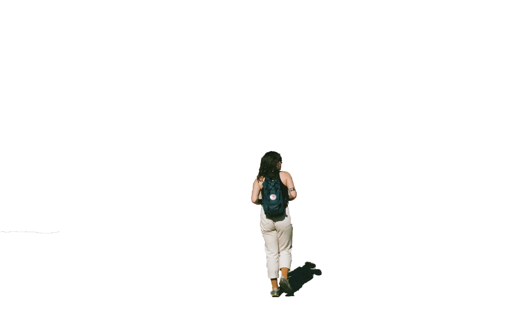

 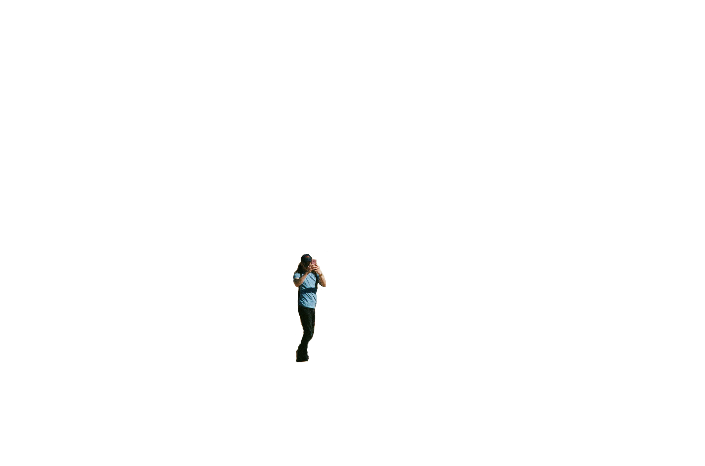
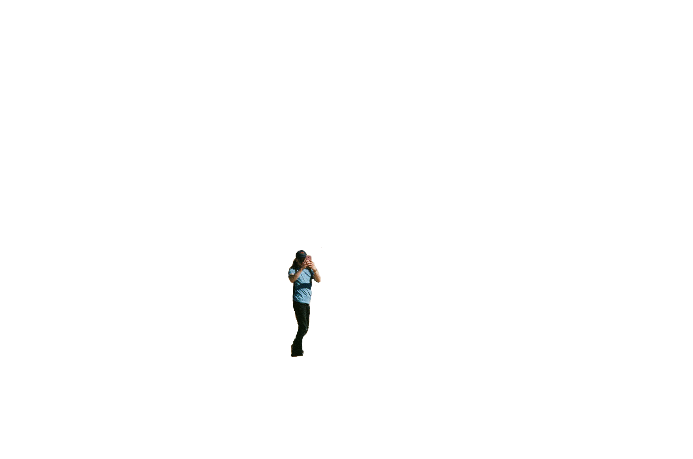

 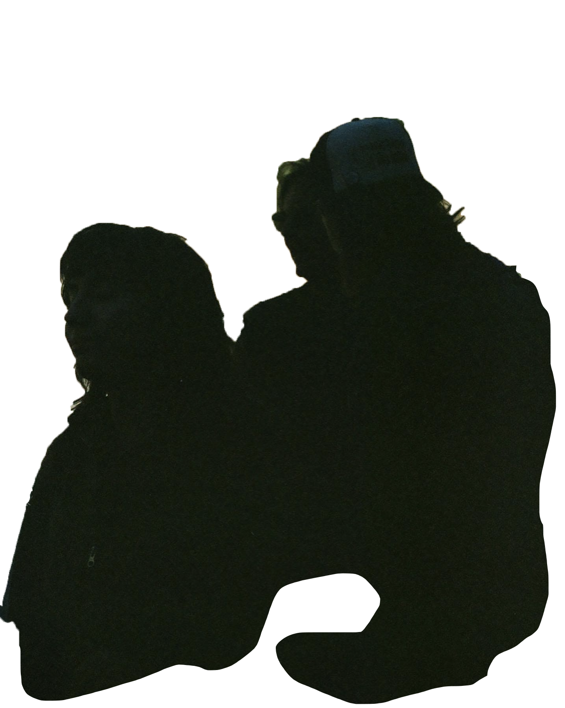
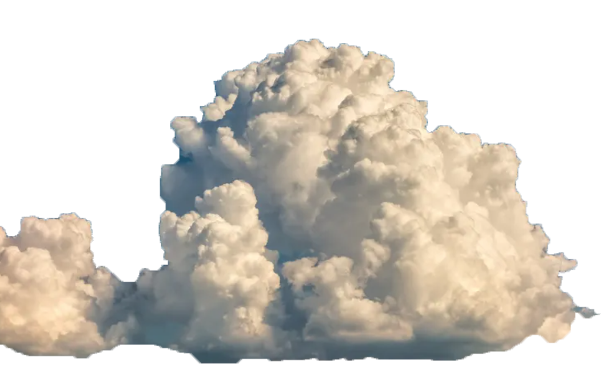
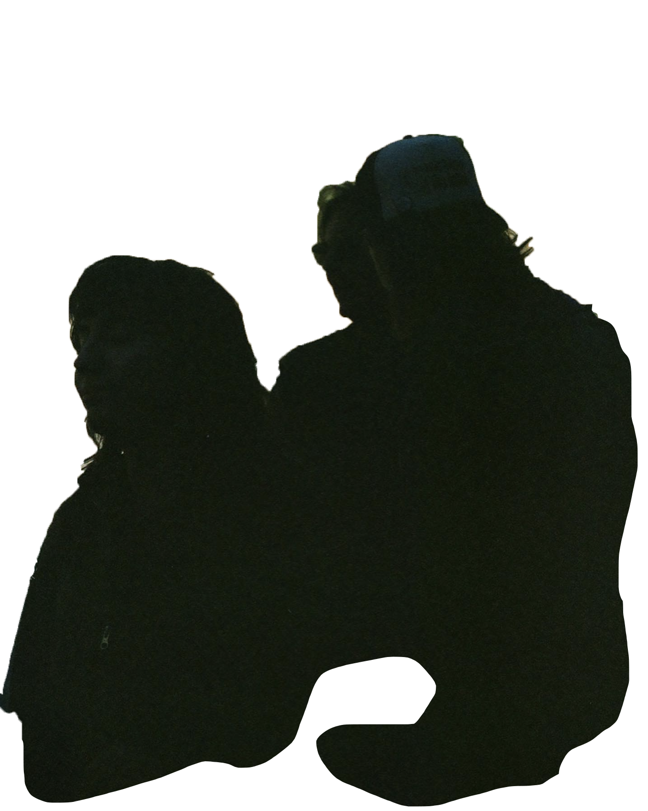
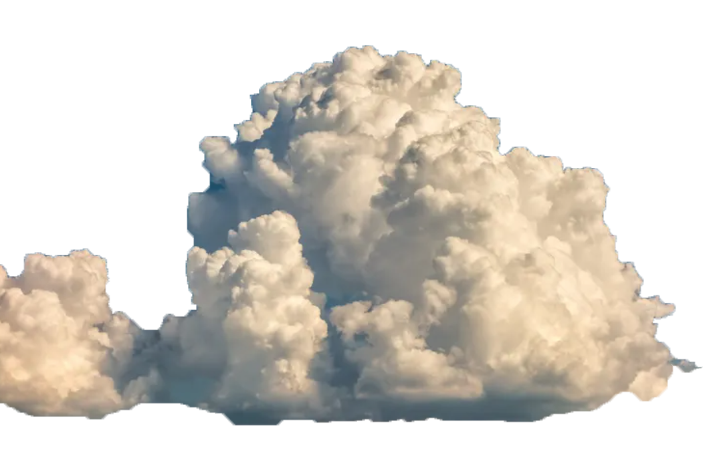

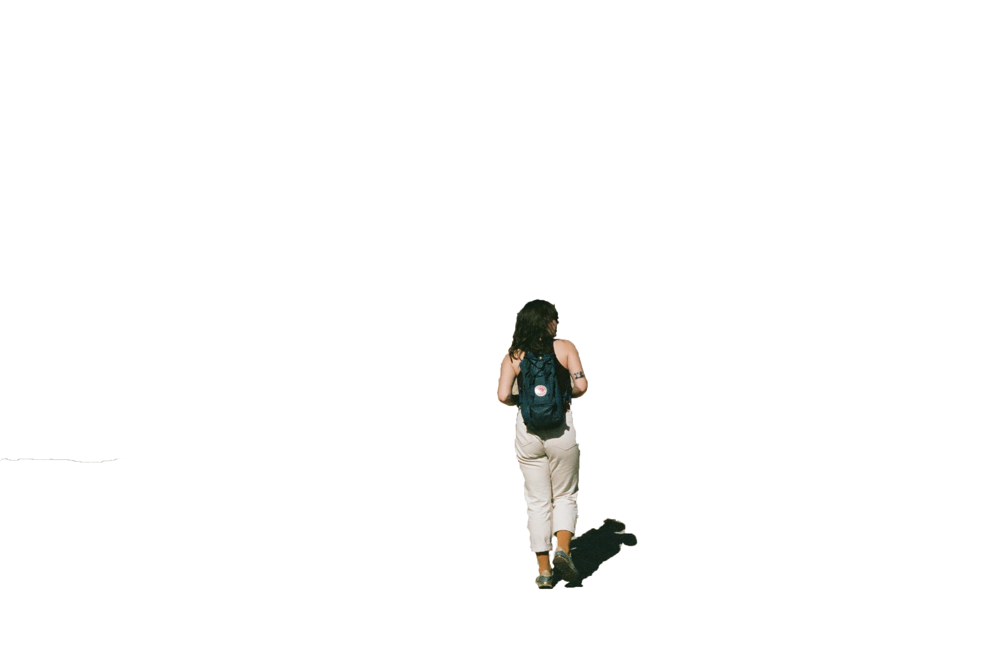
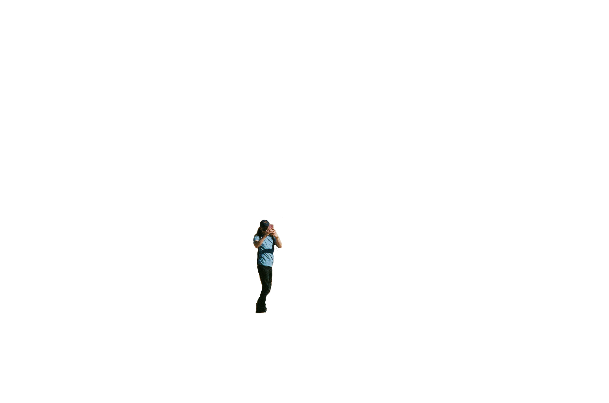
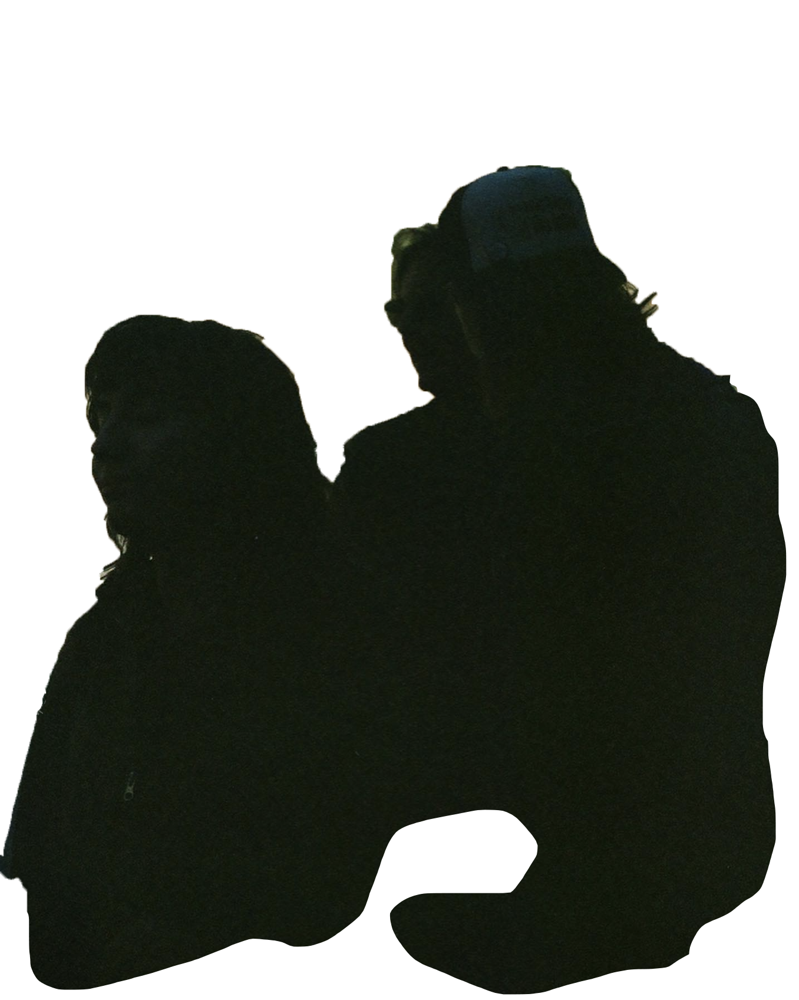
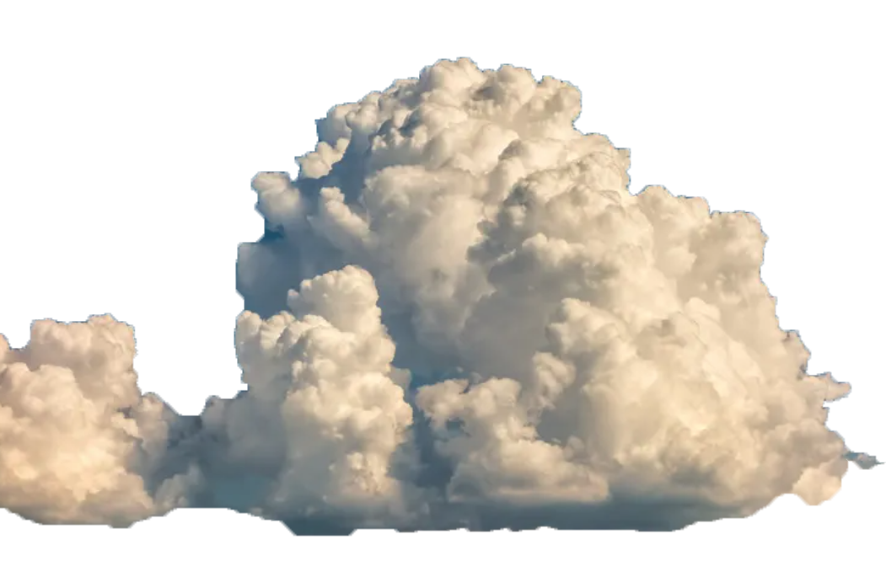
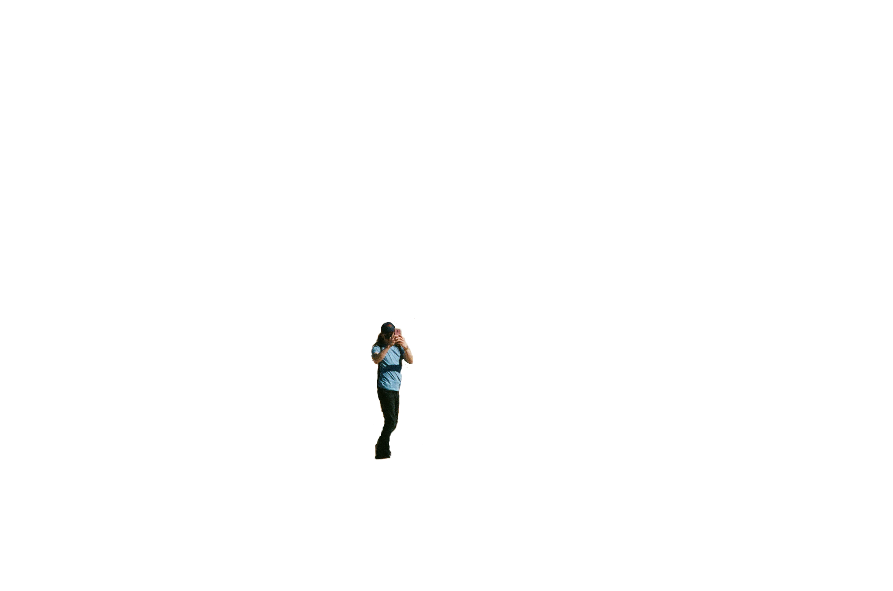
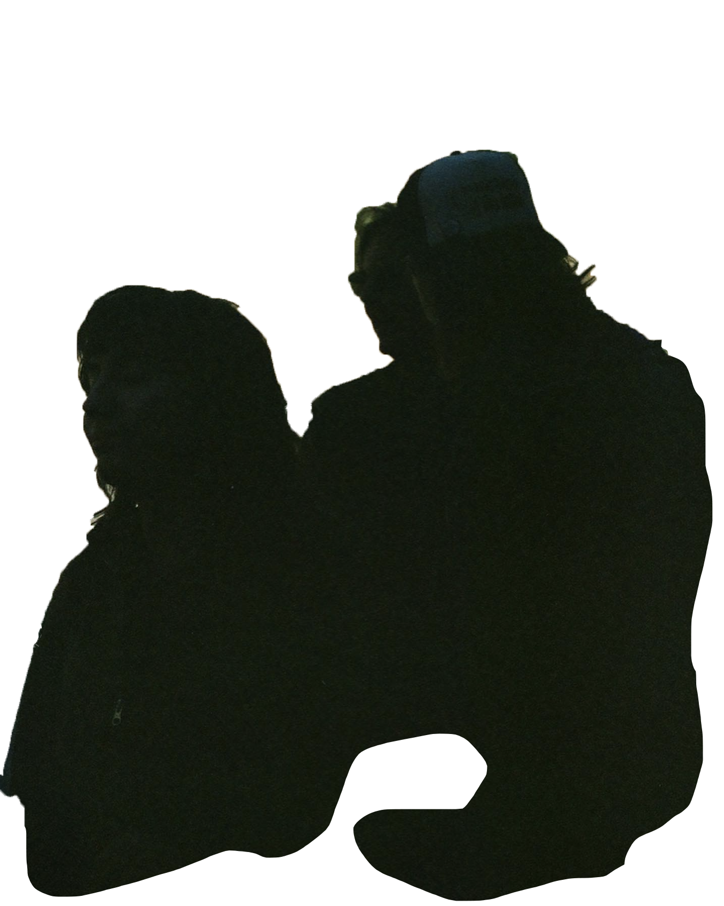
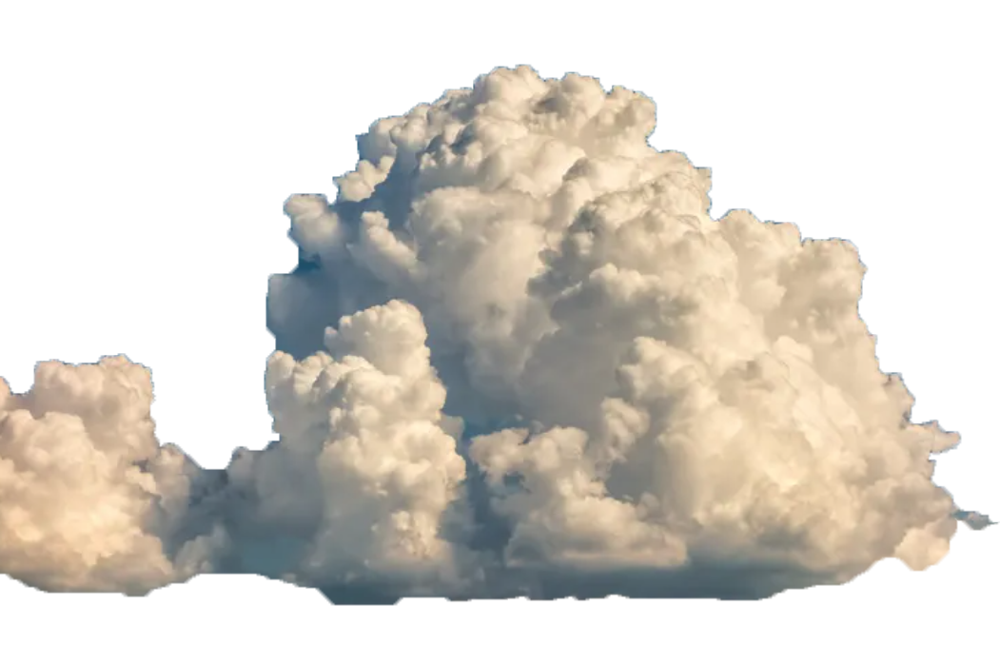